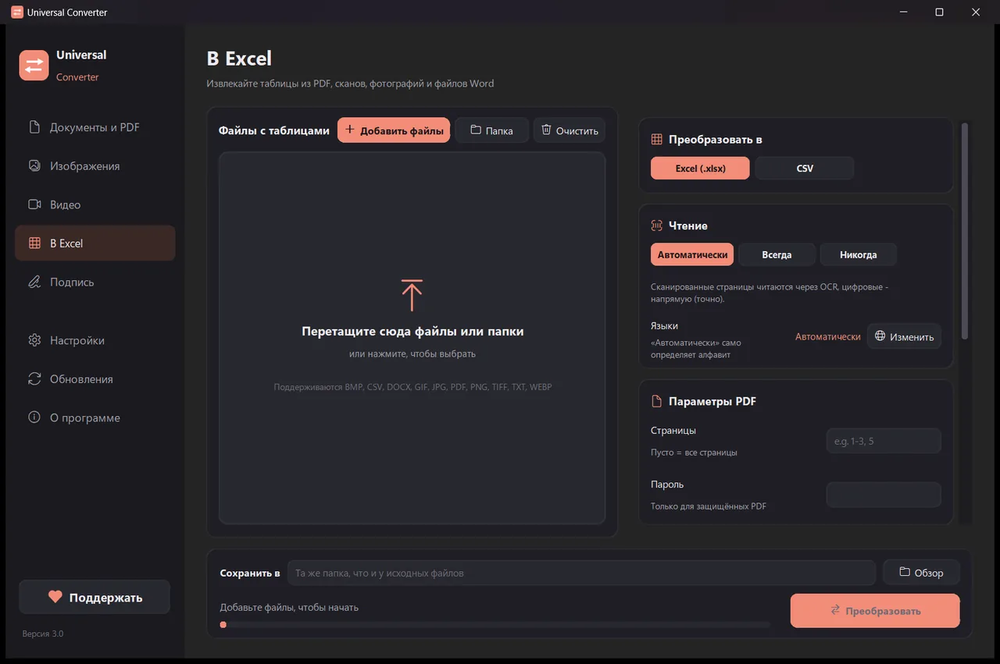

Преобразовать банковскую выписку из PDF в Excel
Банковские выписки полны личных данных, поэтому их не стоит загружать на сайты. Universal Converter читает таблицы операций на вашем устройстве, включая сканированные или сфотографированные выписки, и сохраняет даты, описания и суммы в отдельных столбцах, а суммы - как числа.
Как установить и обновить
- Откройте скачанный .dmg и перетащите Universal Converter в «Программы».
- Откройте приложение. При первом запуске macOS блокирует его, потому что оно не подписано Apple: нажмите «Готово».
- Откройте Системные настройки > Конфиденциальность и безопасность, прокрутите вниз, нажмите «Всё равно открыть» и введите пароль. Это нужно сделать только один раз.
Обновления: если вы разрешите это при первом запуске, приложение при каждом запуске проверяет новые версии, проверяет их цифровую подпись и устанавливает, когда вы решите.
Как установить и обновить
- Нажмите «Скачать для Android» на телефоне.
- Откройте скачанный файл. Если Android спросит, разрешите браузеру или файловому менеджеру устанавливать приложения.
- Нажмите «Установить».
Обновления: приложение проверяет их примерно раз в день и сообщает, когда готова новая версия. Скачайте её так же и установите поверх старой; настройки сохранятся.
Как это сделать
- Откройте Universal Converter и выберите слева В Excel.
- Перетащите в окно файлы или целую папку или нажмите «Добавить файлы».
- Выберите Excel (или CSV). Для сканированных выписок выберите язык выписки или оставьте «Автоматически».
- Нажмите «Преобразовать». Новые файлы сохраняются рядом с оригиналами или в выбранной вами папке.

Зачем делать это офлайн?
Universal Converter выполняет работу на вашем устройстве. Ваши файлы остаются конфиденциальными, большие файлы не проблема, и всё работает без интернета.
Что ещё умеет
- Преобразовать PDF в Word
- Преобразовать документы Word в PDF
- Объединить несколько файлов в один PDF
- Сжать PDF до нужного размера
- Преобразовать страницы PDF в картинки JPG
- Превратить отсканированный документ в редактируемый файл Word
- Преобразование картинок между JPG, PNG, WEBP и другими
- Изменить размер картинок или уменьшить их до размера файла
- Объединить фотографии в один PDF
- Скопировать текст с картинки (OCR)
- Сжать видео без загрузки в сеть
- Преобразование видео между MP4, MKV, WebM, MOV и AVI
- Сохранить звук из видео в MP3
- Сделать GIF из видео
- Перенести таблицы из PDF в Excel
- Извлечь таблицы из счетов в PDF в Excel
- Подписать PDF
- Заполнить PDF-форму